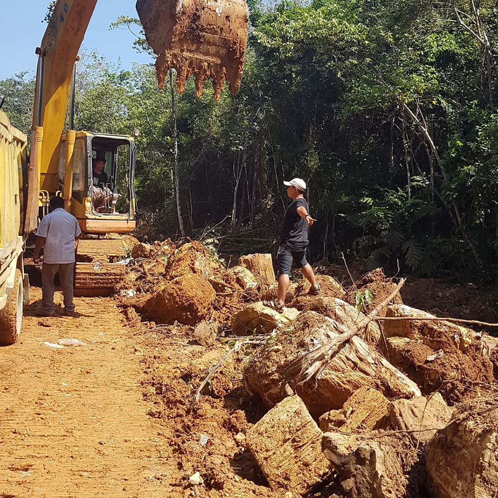
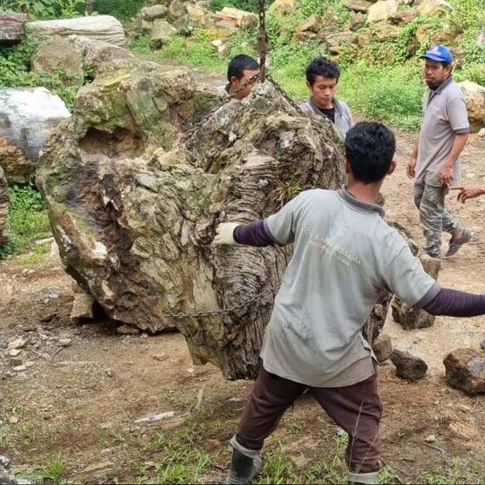

Responsibly Sourced
Every raw specimen is extracted under licensed mining operations with proper concession rights. We do not support or purchase from illegal excavation sites. Our supply chain from Banten, Sumatra, and Java is fully traceable.
Community First
CV Karya Bersama prioritises hiring from the local native communities near our sourcing and workshop sites. Our craftsmen in Bogor are trained in-house, building generational skills and livelihoods within the communities where we operate.
Built for Generations
Petrified wood does not rot, warp, or decay. A table we make today will still be in perfect condition in 200 years — passed from one generation to the next. Choosing our furniture is a choice against disposable consumption.

Responsible Extraction
Licensed Mining,
Proper Rights
The ancient deposits of petrified wood found across the Indonesian archipelago — in the highlands of Banten, the riverbeds of Sumatra, and the volcanic foothills of Java — are a finite and irreplaceable geological resource.
CV Karya Bersama holds and operates under proper IUP (Izin Usaha Pertambangan) mining concession rights. Every extraction site is permitted by local and regional authorities. We work with local land owners and engage directly with village leadership before commencing any operations.
Waste rock and overburden is managed and minimised. We do not use heavy chemical treatments during extraction. The material speaks for itself — our job is simply to reveal it.
People & Livelihoods
Local Hands,
Local Knowledge
Our workshop in Bogor, West Java is staffed entirely by Indonesian craftsmen — the majority drawn from communities within the sourcing regions of Banten and West Java. We believe the people closest to the material should be the ones who shape it.
Workers receive fair wages, on-site skill training, and long-term employment contracts. Many of our senior craftsmen have been with CV Karya Bersama for over a decade. Their knowledge of how to read, cut, and finish petrified wood is a craft that cannot be learned from a manual.
We also support local suppliers — from the small trucking operators who move material off site, to the family-run metal workshops in Bogor who fabricate our table bases and frames.

Where It Comes From
Sourced Across the Archipelago
Our material is sourced from three primary regions across Indonesia — each with its own geological character and mineral profile that gives each piece its unique colour, grain, and crystalline structure.
West Java
Banten
Our primary sourcing region. The Banten highlands contain some of the densest petrified wood deposits in Indonesia, with pieces characterised by warm amber, deep brown, and occasional opalized grain patterns.
Island of Sumatra
Sumatra
Sumatran specimens tend toward larger, more dramatic forms — often exhibiting bold striation, high mineral contrast, and the occasional grey-blue silicate banding that makes for striking statement pieces.
Central & East Java
Jawa
Javanese deposits produce some of our finest decorative slices and tabletop specimens, with tightly preserved grain structures and rich espresso-to-caramel colour gradients.
"The furniture you choose today is an inheritance your grandchildren will still use."
— The philosophy of CV Karya Bersama
Where to Find Us
Our Presence Across Indonesia
Main Workshop & HQ
Bogor
West Java, Indonesia
CV Karya Bersama
Production & Stone Workshop
Flagship Showroom
Bali
Mas Village, Ubud
Gianyar, Bali 80571
Indonesia
Showroom
Yogyakarta
Yogyakarta
Java, Indonesia